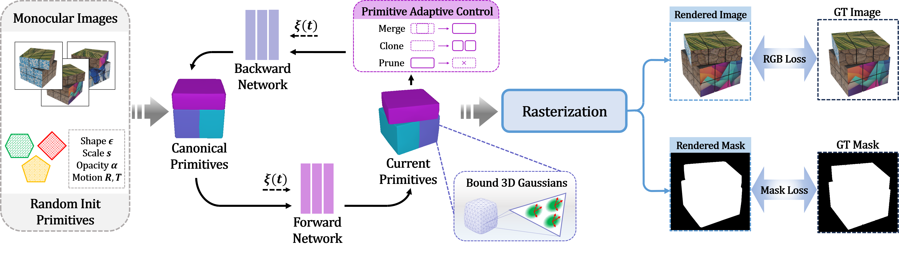

Overview of D-Prism. Given calibrated monocular images and masks, our method learns the structured dynamic geometry and appearance for the sequence. Starting from randomly initialized primitives with learnable shape, scale, opacity, and motion parameters, deformation networks (backward and forward mapping) model the object's underlying motion and drive the primitives across timesteps. Meanwhile, a novel Primitive Adaptive Control strategy manages their count and distribution via merge, clone, and prune operations to enhance our framework's representational ability. Finally, 3D Gaussians are bound to primitive surfaces for high-quality rasterization, supervised by RGB and mask losses.